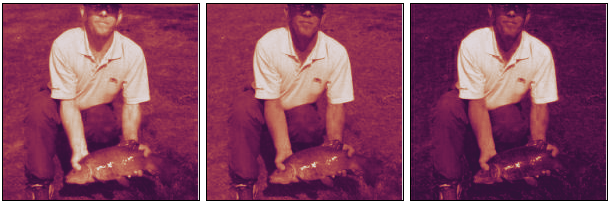
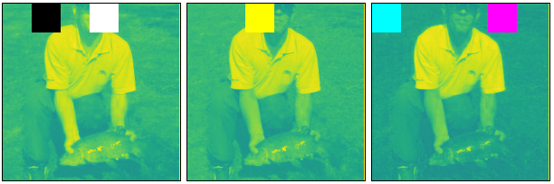
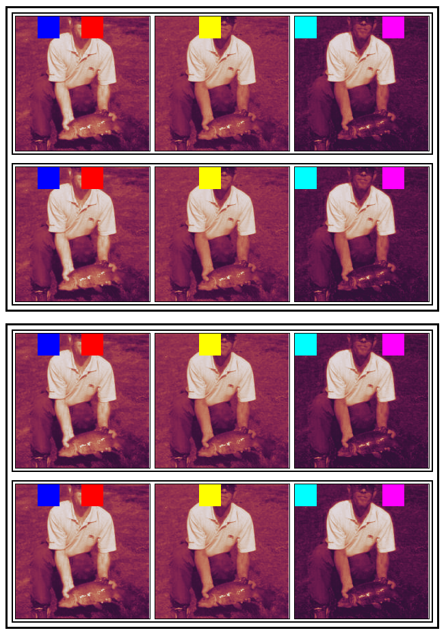

in_stats = ( (0.485, 0.456, 0.406), (0.229, 0.224, 0.225) )
image = torch.load("mysteryman.pt")
image = (image * torch.tensor(in_stats[1])[:,None,None])
image += torch.tensor(in_stats[0])[:,None,None]
image.rgb📺 View channels
chans
chans (x:torch.Tensor, cmap:str='twilight', cm_below:str='blue', cm_above:str='red', cm_ninf:str='cyan', cm_pinf:str='fuchsia', cm_nan:str='yellow', view_width:int=966, gutter_px:int=3, frame_px:int=1, scale:int=1, cl:Any=False, ax:Optional[matplotlib.axes._axes.Axes]=None)
Map tensor values to colors. RGB[A] color is added as channel-last
| Type | Default | Details | |
|---|---|---|---|
| x | Tensor | Input, shape=([…], H, W) | |
| cmap | str | twilight | Use matplotlib colormap by this name |
| cm_below | str | blue | Color for values below -1 |
| cm_above | str | red | Color for values above 1 |
| cm_ninf | str | cyan | Color for -inf values |
| cm_pinf | str | fuchsia | Color for +inf values |
| cm_nan | str | yellow | Color for NaN values |
| view_width | int | 966 | Try to produce an image at most this wide |
| gutter_px | int | 3 | Draw write gutters when tiling the images |
| frame_px | int | 1 | Draw black frame around each image |
| scale | int | 1 | |
| cl | Any | False | |
| ax | Optional | None | |
| Returns | ChanProxy |
chans(image)
# In R
image[0,0:32,32:64] = -1.1 # Below min
image[0,0:32,96:128] = 1.1 # Above max
# In G
image[1,0:32,64:96] = float("nan")
# In B
image[2,0:32,0:32] = float("-inf")
image[2,0:32,128:128+32] = float("+inf")
chans(image, cmap="viridis", cm_below="black", cm_above="white")
# 4 images, stacked 2x2
chans(torch.stack([image]*4).view(2,2,3,196,196))